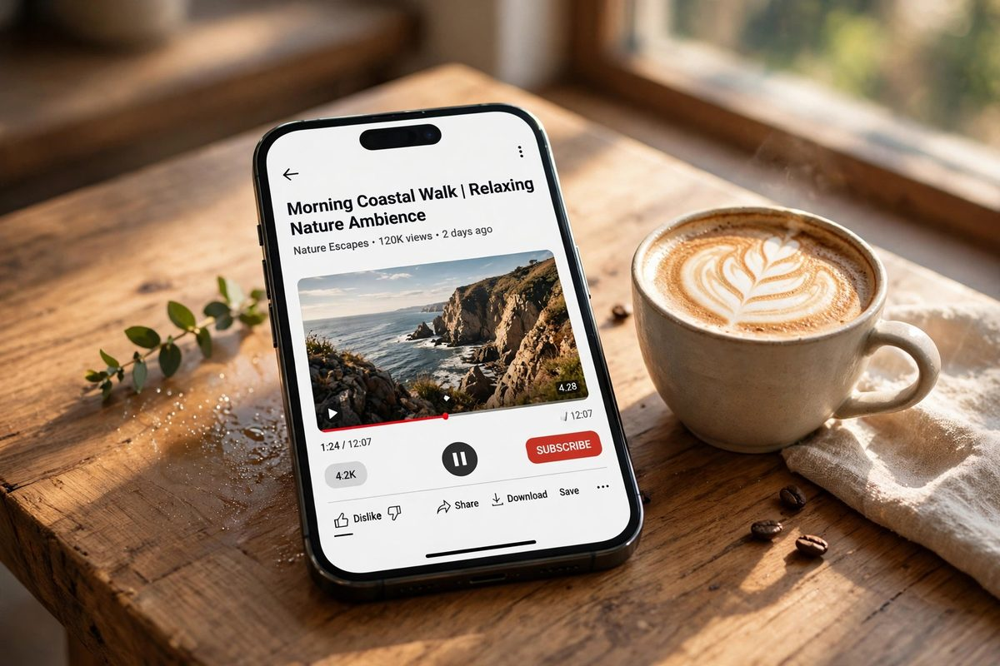
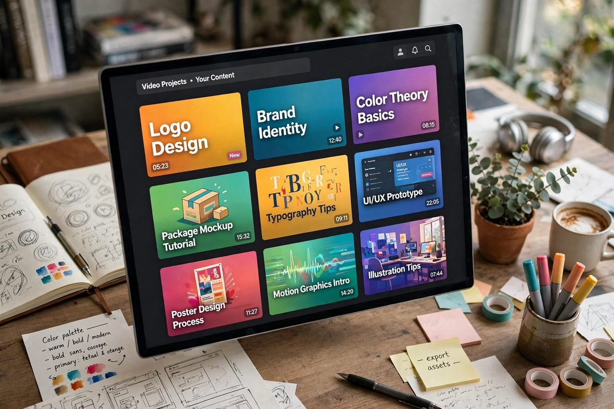
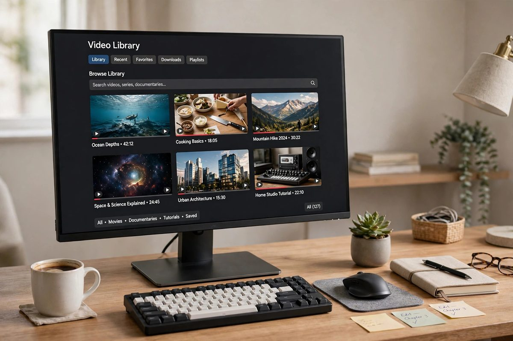
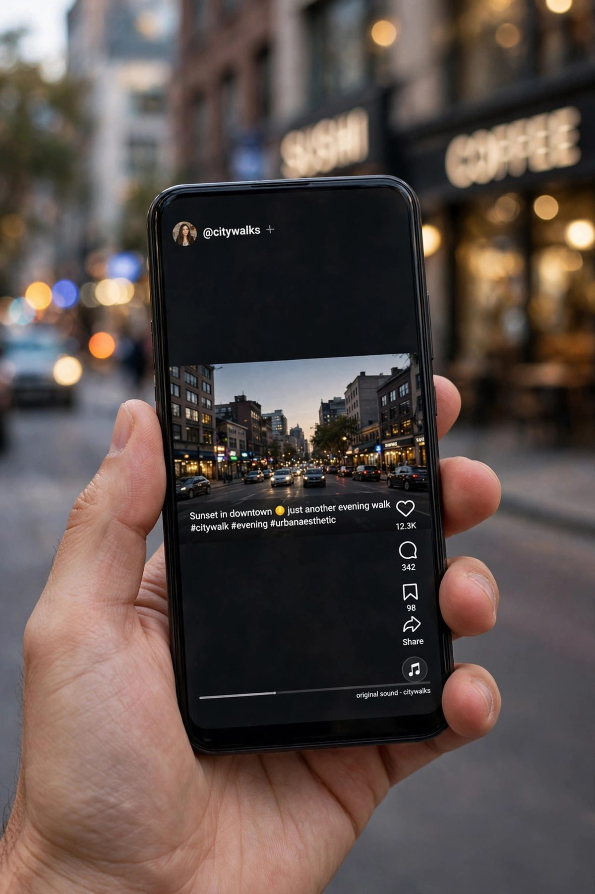
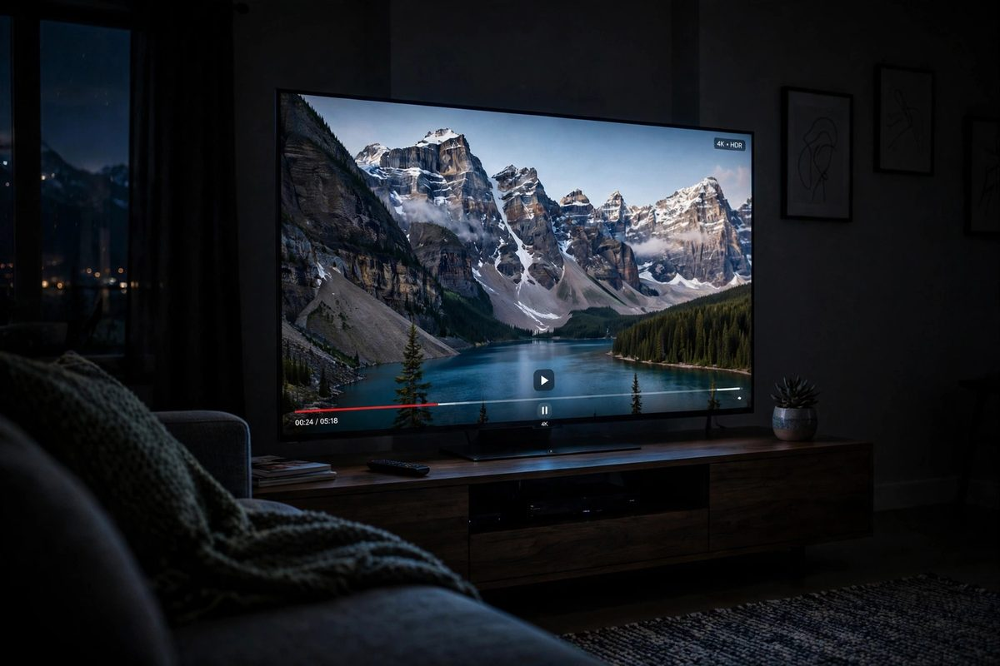
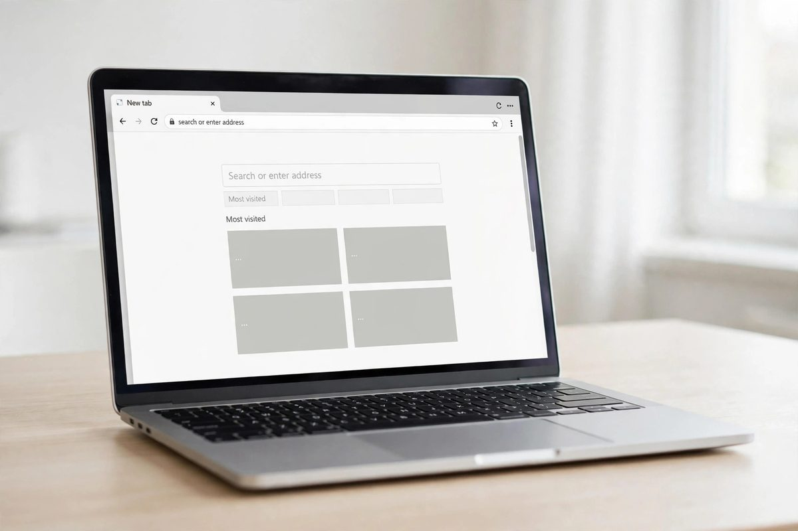
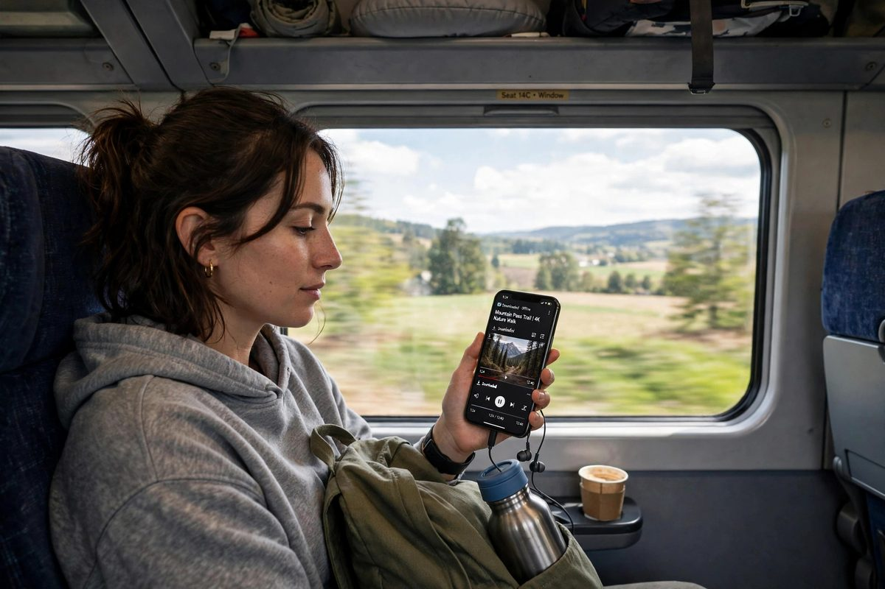

YouTube Video Downloader
Paste a YouTube video link to see its public information and your download options.
More Tools
Guides

How to Download YouTube Videos: A Complete Beginner's Guide
Learn the legitimate ways to save YouTube videos for offline viewing, step by step, on any device.

YouTube Video Quality Options Explained: 144p to 4K and What to Pick
What each YouTube quality setting means, how much data it uses, and which one to choose on phone, TV, or PC.

How to Download YouTube Videos on Android: Every Working Method
Save YouTube videos on your Android phone with the official app, plus storage and quality tips.

How to Download YouTube Videos on iPhone: The Safe Options
Save YouTube videos on iPhone using the official app and iOS features, without risky third-party apps.
YouTube to MP3: How Audio Extraction Works and What Is Allowed
Extracting audio from YouTube videos explained honestly: the options, the quality limits, and the legal lines.

How to Download YouTube Thumbnails in Full Quality
Get any YouTube video's thumbnail image in high resolution, including maxresdefault, with no software.

YouTube Video Info Lookup: Title, Author, Duration, and More
How to look up any public YouTube video's title, channel, description, and thumbnail without opening YouTube.
Is Downloading YouTube Videos Legal? The Rules, Simply Explained
A plain-English guide to the copyright and terms-of-service rules around saving YouTube videos.

How to Save YouTube Videos to Your PC: Storage, Formats, and Tips
Save YouTube videos on Windows and Mac, organise them, and choose formats and quality that fit your disk.

YouTube Shorts Download Guide: Save Short Vertical Videos
How to save YouTube Shorts on phone and PC, what the limits are, and how to keep the quality high.
YouTube Downloader Not Working? Fixes for the Most Common Errors
Why YouTube downloads fail and how to fix each error, from bad links to blocked videos and full storage.

How to Download YouTube Playlists: Save Whole Collections Offline
Save an entire YouTube playlist for offline viewing, with the official method and practical limits.
YouTube Video Download Safety: Avoid Malware, Scams, and Fake Buttons
Stay safe while downloading videos: spot fake download buttons, malicious sites, and risky apps before they hurt you.

Downloading YouTube Videos in 4K: Quality, Size, and Playback
What you need to download and play 4K YouTube videos, and when 4K is actually worth the extra data.

YouTube Video URL Formats: Watch, Shorts, Embed, and Short Links
Every YouTube link format explained: watch URLs, youtu.be links, Shorts, embeds, and how to read the video ID.

How to Download YouTube Videos Without Installing Any App
Save YouTube videos using only your browser and the official features, with nothing to install.

YouTube Watch Later vs Download: Which One Should You Use?
Compare saving videos with Watch Later and playlists against downloading them for offline viewing.
Downloading YouTube Music Videos: What Works and What Does Not
Save music videos and songs from YouTube legally, with YouTube Music and the limits on music content.

Why Your Downloaded YouTube Videos Look Blurry (and How to Fix It)
Blurry downloads explained: quality settings, source resolution, and playback tips for sharper video.

Downloading YouTube Videos for Travel: Flights, Trains, and Offline Trips
Prepare YouTube videos for a trip: what to download, how much space you need, and how to keep them working offline.